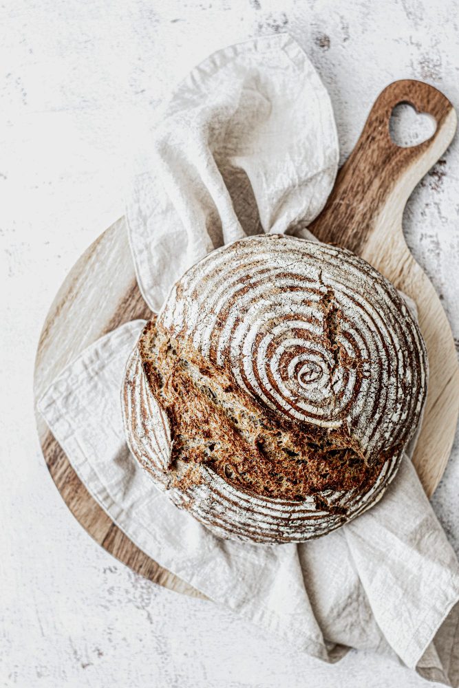

Sauerteigbrot

Beschreibung
Ein einfaches Sauerteigbrot wie zu Omas Zeiten - ohne Hefe, geschmacksintensiv und sehr bekömmlich.
Die Entschleunigung bei der Zubereitung gibts dazu!
Zutaten für 1 Laib
- 1 kg Mehl (z.B. Weizen 550)
- 700 ml Wasser
- 20 gr Salz
- 70 gr. aktiven Sauerteig
Zubereitung
- Autolyse: Mehl und 650 ml Wasser vermischen und eine Stunde stehen lassen.
- Sauerteig und Salz mit einer Küschenmaschine oder den Knethaken eines Handrührgeräts einarbeiten,
bis ein geschmeidiger Teig entstanden ist. Das restliche Wasser nach Bedarf hinzufügen.
- Teig in ein geölte Teigschüssel geben, abdecken und für mindestens zwölf Stunden im Kühlschrank gehen lassen.
- Teig auf eine mit Mehl bestaubte Arbeitsplatte geben, zu einem Laib formen und rundwirken. Danach mit Schuss nach unten in ein gut bemehltes
Teigkörbchen geben und mit einem Geschirrtuch abdecken. Für zwei bis vier Stunden bei Raumtemperatur stehen lassen.
- Backofen samt Gusseisentopf mit Deckel bei höchster Temperatur und Ober-Unterhitze aufheizen. Teigling vorsichtig
in den Gusseisentopf geben, Deckel aufsetzen und 45 Minuten backen. Anschließend Deckel abnehmen und bis zur gewünschten Bräune
(ca. zehn Minuten) weiterbacken.
- Brot vor dem Anschneiden vollständig abkühlen lassen.
Guten Appetit!
Zurück zu all meinen Lieblingsrezepten